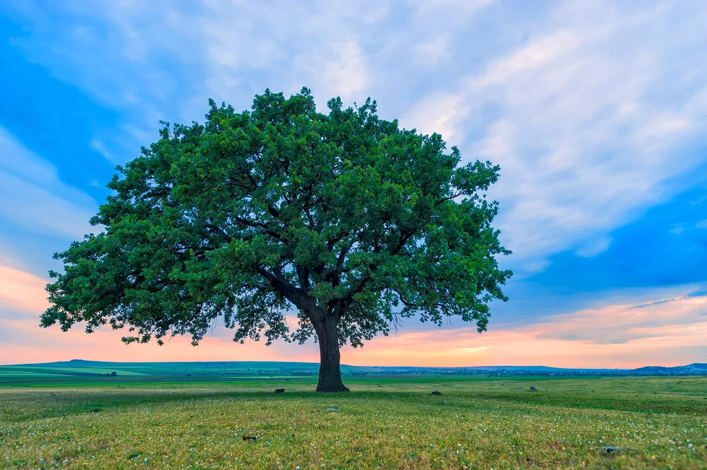
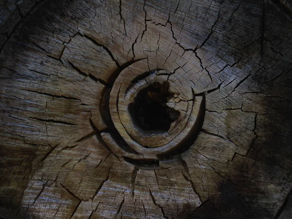

A fák a Föld egyik legfontosabb élőlényei, amelyek nélkül az emberiség sem létezhetne. Hatalmas zöld tüdejükön át oxigént termelnek, szén-dioxidot kötnek meg, és számos élőlénynek adnak otthont. A legöregebb példányok évszázadok, sőt évezredek óta tanúi bolygónk változásainak.
A fa felépítése tökéletesen alkalmazkodik a feladatához. A gyökerek rögzítik a talajban, és vizet, ásványi anyagokat szívnak fel. A törzs évgyűrűi nemcsak a fa korát őrzik, hanem az elmúlt évek időjárását is rögzítik. A kéreg véd a kártevők és a szélsőséges időjárás ellen. A koronában található levelek végzik a csodálatos fotoszintézist – itt napfény segítségével alakul át a víz és a szén-dioxid glükózzá és oxigénné.

Változatosságuk bámulatos. A lombhullató fák – mint a tölgy, a bükk, a juhar vagy a nyír – ősszel elbúcsúznak leveleiktől, és télen nyugalmi állapotba vonulnak. A tűlevelű fák, például a fenyők vagy a lucfenyők, egész évben zöldek maradnak, mert tűleveleik kevesebb vizet párologtatnak, és ellenállnak a hidegnek. A trópusi esőerdőkben pedig olyan fajok is élnek, amelyekről az ember még nem is tud – például a dzsungel óriásai, a mahagóni vagy a dzsakfa.
A fák ökológiai szerepe felbecsülhetetlen. Erdők ezrei szabályozzák a Föld klímáját, mérséklik a hőmérséklet-ingadozásokat, és megkötik a szennyező anyagokat. Egyetlen nagy fa akár 20 kilogramm szén-dioxidot is elnyelhet évente. A fák gyökérzete megakadályozza a talajeróziót, a lombkorona pedig esővízként felfogja a port és a káros részecskéket. Emellett rengeteg madár, rovar, emlős és gomba él rajtuk vagy alattuk – a fák valódi ökoszisztéma-alapítók.
Nem szabad megfeledkeznünk a fák kulturális jelentőségéről sem. Az ősi kultúrákban a világfák (például a germán Yggdrasil vagy a magyar Életfa) a teremtés és az összeköttetés szimbólumai voltak. A mai városokban a fák árnyékot adnak a forró napokon, csökkentik a zajt és szebbé teszik a környezetet. Egy faültetés egyszerre gesztus a jövő nemzedékek felé – hiszen ha egy tölgyfát ma elültetünk, az unokáink már kérges törzsű, hatalmas fában gyönyörködhetnek.